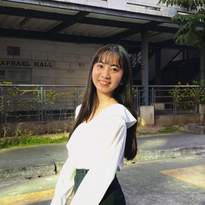

Who is Jo?
Hi! I'm Jorlyn Pangilinan, but most people call me “Jo”. I'm a 2nd year BSIT student at Holy Angel University, under the School of Computing, specializing in Web Development.
Hi! I'm Jorlyn Pangilinan, but most people call me “Jo”. I'm a 2nd year BSIT student at Holy Angel University, under the School of Computing, specializing in Web Development.
My goal is to become a web designer, someone who creates websites that are not only visually appealing but also easy to use. I love exploring new design ideas, experimenting with colors and layouts, and making sure everything feels smooth and user-friendly.
I may not be as good as others yet, and sometimes I feel like I'm still behind, but I genuinely enjoy the challenge. Learning how websites are built, designing layouts, and making things look clean and functional is something I find fun and exciting. I know I still have a lot to learn, but I’'m willing to grow, improve, and keep pushing myself to become better.
Thanks for visiting my page! Feel free to check out my work and join me on this journey of learning and creativity.